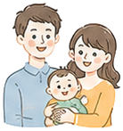
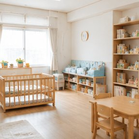

子どもの年齢・世帯年収を入力するだけ。受給できる育児支援制度を自動でリストアップし、年間受給額の目安まで一覧表示。児童手当・幼保無償化・高校無償化など、2026年最新制度に対応。登録不要・無料・最短3分。
制度は知らなければ受け取れません。「申請していれば貰えたのに…」を防ぎましょう。
どんな給付金や支援制度が自分に当てはまるのか分からない
制度が多すぎて、何から調べればいいのか分からない
2024年の児童手当改正で、何が変わったのか把握できていない
役所のサイトは情報が複雑で、結局いくらもらえるのか分からない
面倒な手続きや専門知識は不要。誰でも簡単に、受給可能な制度がわかります。
かんたんな質問に答えるだけ。あなたが受給できる可能性のある制度を自動でリストアップします。

制度ごとの金額に加え、年間でどれくらい受け取れるかの合計目安もひと目で確認できます。
2024年10月の児童手当改正（所得制限撤廃・高校生まで拡大）など、最新の制度内容を反映。
会員登録もアプリのインストールも不要。ブラウザですべて完結し、入力情報も外部に送信しません。
児童手当から進学・ひとり親支援まで、幅広い育児支援制度を網羅しています。
0〜2歳は月15,000円、3歳〜高校生は月10,000円。第3子以降は月30,000円。所得制限なし。
3〜5歳は世帯年収を問わず原則無償。0〜2歳は住民税非課税世帯が対象です。
就学支援金により、公立・私立を問わず高校の授業料負担を軽減できます。
出産時に子ども1人あたり50万円を支給。出産費用の大きな助けになります。
育休開始から180日は賃金の67%、以降は50%を支給。最大2歳まで受け取れます。
児童扶養手当（月最大45,500円）や医療費助成など、ひとり親世帯向けの制度も診断します。
難しい操作は一切ありません。スマホでもPCでも、すぐに診断できます。
子どもの年齢・人数・世帯年収・家庭の状況など、かんたんな質問に答えます。
入力内容をもとに、受給できる可能性のある制度を瞬時に自動判定します。
対象制度と年間受給額の目安を一覧表示。申請窓口の確認にお役立てください。
代表的な制度の支給額の一例です。世帯の状況により金額は変わります。
| 制度 | 対象 | 支給額の目安 |
|---|---|---|
| 児童手当（0〜2歳） | 全世帯 | 月 15,000円 |
| 児童手当（3歳〜高校生） | 全世帯 | 月 10,000円 |
| 児童手当（第3子以降） | 全世帯 | 月 30,000円 |
| 幼保無償化 | 3〜5歳 | 月 最大37,000円相当 |
| 出産育児一時金 | 出産時 | 50万円 / 人 |
| 児童扶養手当 | ひとり親世帯 | 月 最大45,500円 |
※2026年時点の制度に基づく目安です。最新の金額・条件は各窓口にご確認ください。
「知らなかった制度に気づけた」という声を多数いただいています。

出産前に何を申請すればいいか分からず不安でしたが、3分で受給できる制度がまとまって安心しました。
第3子の加算が増えていたことを知りませんでした。年間の受給額の目安が見えて家計の計画が立てやすくなりました。
児童扶養手当や医療費助成など、自分が対象になる制度をまとめて確認できて助かりました。登録不要なのも安心です。
ご利用前に多くいただく質問をまとめました。